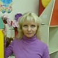

Дошкольное отделение школы № 167
В 2015 году 39% первоклассников Школы № 167 пришли из дошкольного отделения.
- Ленинградское шоссе, 106А
- Смольная улица, 47А
- Фестивальная улица, 35Б
- Фестивальная улица, 35А
Воспитатели
Воспитатели, которых чаще всего благодарят родители (отзывы и профили сотрудников взяты с официального сайта школы):|
Руководитель
Борисова Валентина Васильевна
3 благодарности |
Воспитатель
Сергеева Галина Евгеньевна
3 благодарности |
Муз. рук.
Тюрина Юлия Александровна
3 благодарности |
Воспитатель
Титова Ольга Викторовна
2 благодарности |
|
Воспитатель
Матвеева Светлана Александровна
2 благодарности |
Воспитатель
Шугурова Людмила Михайловна
2 благодарности |
 Воспитатель
Чубур Нина Александровна
Воспитатель
Чубур Нина Александровна
1 благодарность |
Воспитатель
Фомушкина Юлия Евгеньевна
1 благодарность |
|
Воспитатель
Веневцева Ольга Александровна
1 благодарность |
Старший воспитатель
Овчарова Ольга Петровна
1 благодарность |
Воспитатель
Якимова Алевтина Геннадьевна
1 благодарность |
Воспитатель
Дьякова Елена Викторовна
1 благодарность |
|

Воспитатель
Чистова Оксана Николаевна
1 благодарность |
Воспитатель
Панкратова Марина Николаевна
1 благодарность |
Воспитатель
Петрова Марина Александровна
1 благодарность |
Воспитатель
Снигур Ирина Анатольевна
1 благодарность |
Отзывы
Данные собраны c официального сайта школы и через форму для отзывов.
Добрый день!
Хочу выразить свою благодарность коллективу детского сада №167 по адресу Смольная 47а. Моя дочь посещает данный детский сад с марта 2016 года. Воспитатели группы (Алевтина Геннадьевна и Нина Александровна) и помощник воспитателя (Жанна Александровна) оказали огромную помощь и поддержку в адаптации дочери к детскому саду. Были учтены все наши пожелания. Я вижу душевное и искреннее отношение к детям. Дочь радостно идет в детский сад и каждый день учится чему-то новому.
Также хочу сказать добрые слова в адрес учителя физкультуры и музыкального руководителя, к сожалению, не знаю их имен.
Хочу выразить свою благодарность коллективу детского сада №167 по адресу Смольная 47а. Моя дочь посещает данный детский сад с марта 2016 года. Воспитатели группы (Алевтина Геннадьевна и Нина Александровна) и помощник воспитателя (Жанна Александровна) оказали огромную помощь и поддержку в адаптации дочери к детскому саду. Были учтены все наши пожелания. Я вижу душевное и искреннее отношение к детям. Дочь радостно идет в детский сад и каждый день учится чему-то новому.
Также хочу сказать добрые слова в адрес учителя физкультуры и музыкального руководителя, к сожалению, не знаю их имен.
Хотим выразить огромную благодарность нашим воспитателям д/с 869 группы 8 - Бояринцевой Людмиле Николаевне и Фомушкиной Юлии Евгеньевне, а также помощнику воспитателя Марине Николаевне.Спасибо вам огромное за ваши старания, любовь и заботу о наших детях. Спасибо за чудесные и интересные занятия,утренники и мероприятия!!! Вы самые лучшие!!! Желаем вам дальнейших успехов в работе и хороших воспитанников.
от родителей г.№8 д/с 869
Вложенный файл
от родителей г.№8 д/с 869
Вложенный файл
Мы, родители детского сада № 869 средней группы 6, хотим выразить благодарность нашим воспитателям Шугуровой Людмиле Михайловне и Матвеевой Светлане Александровне, а так же помошнику воспитателя Ольге Анатольевне.
Хотим отметить высокий профессионализм, чуткое отношение к детям, заботу, внимание, индивидуальный подход к каждому ребенку, доброту и теплоту. Мы с вами знаем, насколько трудна работа воспитателя: сколько ответственности и заботы лежит на их плечах. Как сложно найти подход к одному ребенку, и как им приходится справляться с психологическими особенности сразу тридцати малышей. Людмила Михайловна и Светлана Александровна стремятся сделать из наших детей полноценных личностей, активных участников детского коллектива, учат быть честными, добрыми, открытыми и заботливыми. Они учат малышей дружить и уважать друг друга, творить и фантазировать, ценить прекрасное, любить свою семью и свою Землю. Все это благодаря профессионализму и опыту, приобретенному за многие годы работы с детьми. Знание психологии ребенка, постоянное саморазвитие в профессиональной сфере просто незаменимы в профессии ВОСПИТАТЕЛЯ. Спасибо Вам за вашу любовь и за вашу заботу! С уважением и благодарностью, родители средней группы 6.
Хотим отметить высокий профессионализм, чуткое отношение к детям, заботу, внимание, индивидуальный подход к каждому ребенку, доброту и теплоту. Мы с вами знаем, насколько трудна работа воспитателя: сколько ответственности и заботы лежит на их плечах. Как сложно найти подход к одному ребенку, и как им приходится справляться с психологическими особенности сразу тридцати малышей. Людмила Михайловна и Светлана Александровна стремятся сделать из наших детей полноценных личностей, активных участников детского коллектива, учат быть честными, добрыми, открытыми и заботливыми. Они учат малышей дружить и уважать друг друга, творить и фантазировать, ценить прекрасное, любить свою семью и свою Землю. Все это благодаря профессионализму и опыту, приобретенному за многие годы работы с детьми. Знание психологии ребенка, постоянное саморазвитие в профессиональной сфере просто незаменимы в профессии ВОСПИТАТЕЛЯ. Спасибо Вам за вашу любовь и за вашу заботу! С уважением и благодарностью, родители средней группы 6.
Добрый день! Третий год мой сынулька ходит в Д/с № 449. За это время коллектив сада стал нам как родной. все делают свою работу с душой и удовольствием! В данный момент мой сын является воспитанником группы № 2. Хочу поблагодарить воспитателей нашей группы, а также их помощницу за чуткое и внимательное отношение к нашим детям.
Отдельно хочу сказать спасибо воспитателю Ольге Петровне Овчаровой - она работает воспитателем в нашей группе первый год, но все дети ее очень полюбили, да и родители тоже. Она отличный педагог и просто замечательный человек, который очень любит детей! К каждому из малышей она нашла нужный подход, у нее всегда масса интересных занятий для наших детишек, а родителям она всегда готова помочь порой так необходимым советом.
Спасибо вам всем большое за ваш нелегкий и такой важный труд!
Отдельно хочу сказать спасибо воспитателю Ольге Петровне Овчаровой - она работает воспитателем в нашей группе первый год, но все дети ее очень полюбили, да и родители тоже. Она отличный педагог и просто замечательный человек, который очень любит детей! К каждому из малышей она нашла нужный подход, у нее всегда масса интересных занятий для наших детишек, а родителям она всегда готова помочь порой так необходимым советом.
Спасибо вам всем большое за ваш нелегкий и такой важный труд!
Благодарность.
Хотелось бы отметить умелое и чуткое руководство заведующей детским садом №449 Борисовой Валентины Васильевны, которая создает в саду порядок, дружелюбную и теплую атмосферу, с родителями всегда идет на контакт. Ведь без ее грамотного руководства, наверное, не было бы таких педагогов, работающих с нашими детьми.
Огромное Вам СПАСИБО за все то, что Вы делаете для наших деток! Наталья Гаврикова.
Хотелось бы отметить умелое и чуткое руководство заведующей детским садом №449 Борисовой Валентины Васильевны, которая создает в саду порядок, дружелюбную и теплую атмосферу, с родителями всегда идет на контакт. Ведь без ее грамотного руководства, наверное, не было бы таких педагогов, работающих с нашими детьми.
Огромное Вам СПАСИБО за все то, что Вы делаете для наших деток! Наталья Гаврикова.
Хочу поблагодарить воспитателя подготовительной группы Сергееву Галину Евгеньевну. В ее ежедневную работу с нашими детьми вложен огромный труд. Труд, который виден невооруженным глазом. Стоит только присмотреться! Спокойная атмосфера в группе, ежедневные прогулки, четкий распорядок дня, поделки, рисунки и, главное, веселые, ухоженные дети. Все это дорогого стоит! Иногда даже нам, мамочкам, стоит поучиться тому, как Галина Евгеньевна ежедневно (с 7 утра) и до 19-00 возится с нашими детками. А ведь мы, порой, и с одним с трудом справляемся!
Перед Новым годом состоялось праздничное выступление группы №5 детского сада 503. Наша группа - дошколята, самые старшие в садике. Год за годом мы смотрели, как они растут и как развиваются их артистические способности, и в этом году ребятишки очень порадовали своим выступлением. Мы видели, как тщательно готовились к празднику дети, и сколько труда вложили в подготовку педагоги: музыкальный руководитель Юлия Александровна и воспитатели нашей группы, особенно Елена Викторовна. Декорации и костюмы очень тщательно продуманы, многие из них готовились вручную специально к празднику. Репетиции настолько увлекли группу, что иногда ребята даже слегка опаздывали на обед. Но когда видишь, сколько души в это вложено, начинаешь понимать, что результат стоит многих усилий. Нам очень понравился праздник, ребята не подвели, а участие воспитателей (даже из других групп!) очень украсило и оживило праздник. Особенно здорово сыграли клоунов. Спасибо большое замечательному коллективу нашего садика и отдельно Юлии Александровне! [URL=http://www.radikal.ru][IMG]http://s019.radikal.ru/i626/1501/9c/3ac0e5b4a962.jpg[/IMG][/URL]
Здравствуйте, уважаемая Карина Робертовна, мы - дети и родители группы № 6 детского сада 503 хотим выразить свою огромную благодарность коллективу детского сада за подготовку необыкновенно красивых, творческих новогодних детских утренников. Это было настоящее театрализованное ШОУ! Как замечательно выступали дети!!! Просто настоящие артисты! Очень профессионально и ненавязчиво играли свои роли воспитатели! Молодцы! Все получили такое удовольствие от праздника!!! Большое спасибо музыкальному руководителю Юлии Александровне за творческий вклад в наших детей, воспитателям нашей группы Ирине Анатольевне и Ольге Александровне за доброту и отзывчивость, всем-всем педагогам и руководству детского сада за внимание, трогательную заботу о наших детях, редкую по нынешним временам душевность! Низкий ВАМ поклон и самые теплые слова благодарности за ваш труд!!!
Добрый день, мой ребенок ходит в 1 группу д/с 449. Выражаю свою благодарность педагогическому составу нашей группы Марине Александровне и Оксане Николаевне. Это очень внимательные и заботливые воспитатели, приводя в садик свою дочь, я всегда уверена, что все будет отлично. Благодаря грамотно построенному адаптационному процессу привыкание прошло успешно и мой ребенок теперь с огромным удовольствием каждый день бежит в садик. А так же отдельное спасибо за организацию дополнительных занятий для наших детей (логоритмика и показ сказок), очень удобно, что на базе д/с можно получить и дополнительные занятия, на которые порой просто нет времени отвести ребенка самостоятельно. Спасибо вам за все.
Мой ребенок посещает вторую младшую группу в ДС № 449. Хочу выразить благодарность всему педагогическому коллективу нашего сада за атмосферу тепла и доброжелательности. В особенности хочу поблагодарить нашего воспитателя - Титову Ольгу Викторовну за ее труд,внимание, отзывчивость и заботу. Ольга Викторовна делает весь учебно-воспитательный процесс интересным, разнообразным и увлекательным, в ответ на это она получает благодарные улыбки детей, да и родителей тоже)!
Если вы нашли ошибку или неточность, пожалуйста, сообщите нам об этом.
Ученик, выпускник или родитель? Оставьте отзыв о детском саде.